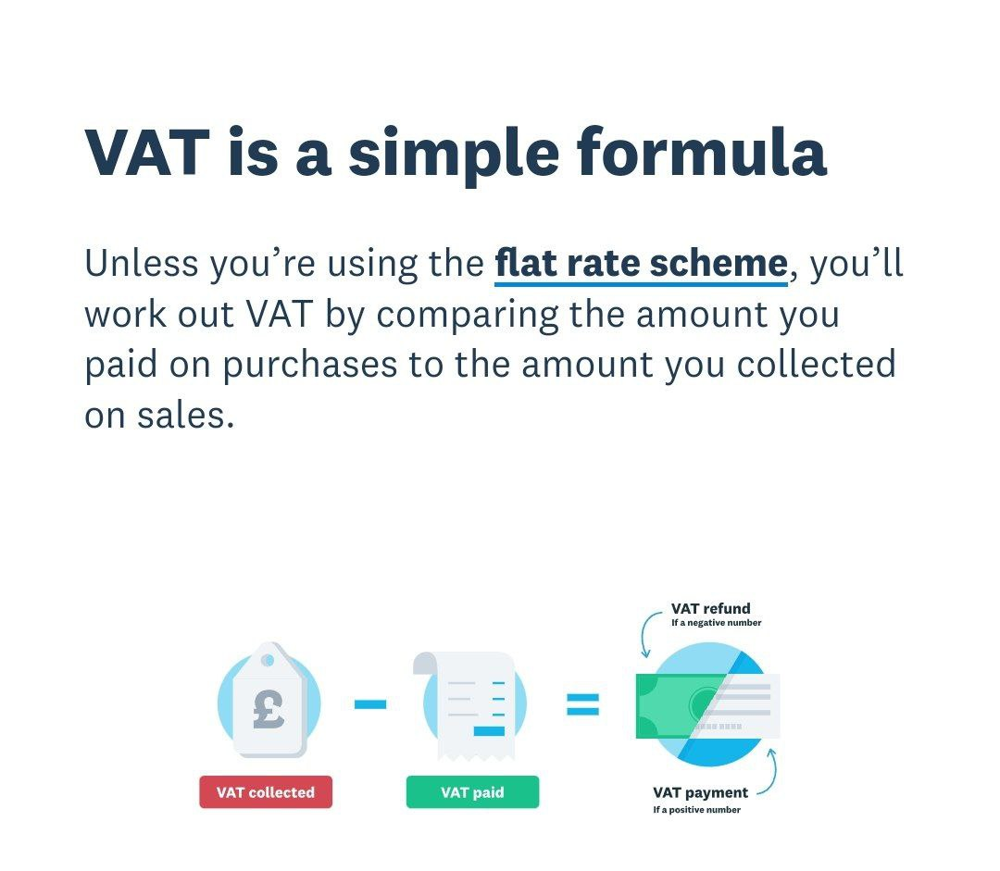
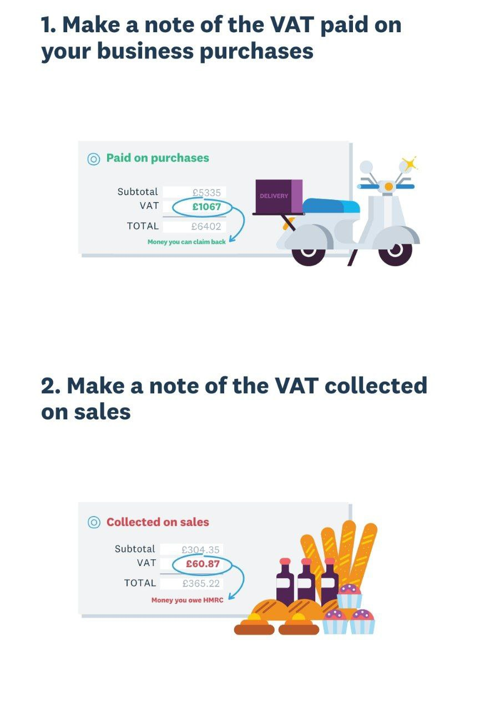
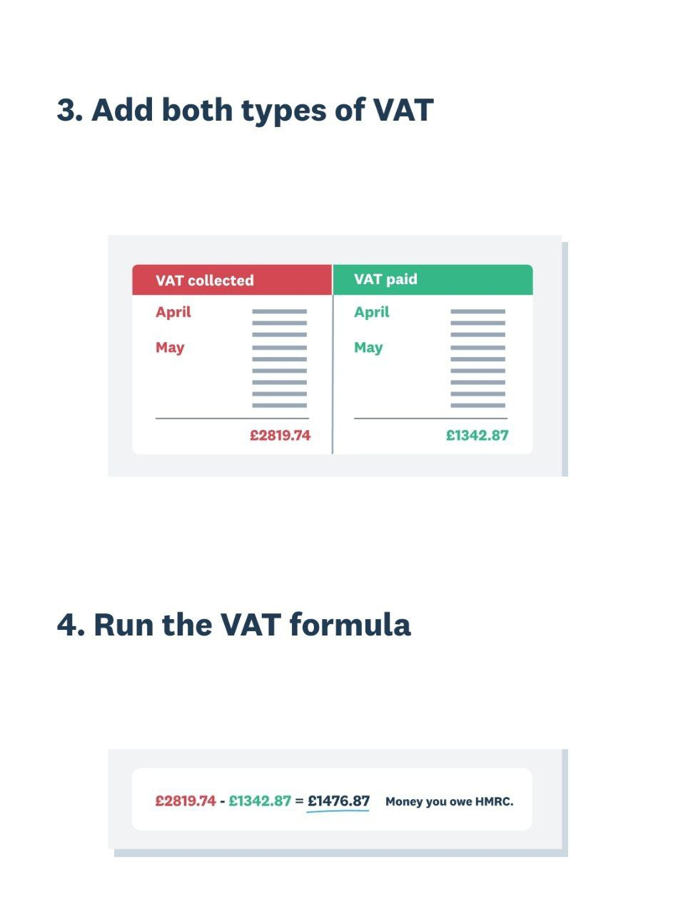

🔴НАЛОГИ
Сводный закон о подоходных налогах (сокращенно TUIR ) — это закон Итальянской Республики по вопросам налогообложения, введенный в правовую систему Указом Президента №. № 917 от 22 декабря 1986 года.
Здесь всё о налогообложении физ лиц и компаний.
В этом законе много интересного. Начиная с вопроса налогового резидентства в Италии (определение):
art.2.2
2. Ai fini delle imposte sui redditi si considerano residenti le persone che per la maggior parte del periodo di imposta sono iscritte nelle anagrafi della popolazione residente o hanno nel territorio dello Stato il domicilio o la residenza ai sensi del codice civile.
2. Резидентами для целей подоходного налога считаются лица, которые бOльшую часть налогового периода состоят на учете постоянного населения или имеют домичилио или резиденцу на территории государства в соответствии с Гражданским кодексом.
(пожалуйста, самостоятельно проверяйте правильность перевода!)
Как рассчитывать аванс для уплаты налога за текущий год при режиме forfettario и сроки оплаты аванса (1 взнос - 50% - до 30 июня и 2-й взнос - 50% - до 30 ноября).
Методы рассчета аванса - исторический и прогнозируемый. (Если рассчитал прогнозируемым методом и ошибся - будет штраф. Поэтому видится, что исторический метод - менее рисковый)
🖍 См. пост в канале ->
Дополнение: если certificazione unica делается через коммерчиалиста по его каналам связи, то до 30 ноября можно и налоги сразу одним платежом закрыть в этом случае.
🖍 См. пост в канале ->
Подробная статья про сроки уплаты, и также с подробным описанием возможности рассрочки для взносов.
Scadenze fiscali 2024 – Liberi professionisti in regime forfettario
По этой ссылке можно найти сроки обязательных взносов для ремесленников и коммерсантов на 2024 год.
С какого момента становишься налоговым резидентом Италии?
TIUR - testo unico delle imposte sui redditi
Art. 2, comma 2:
Ai fini delle imposte sui redditi si considerano residenti le persone che per la maggior parte del periodo di imposta sono iscritte nelle anagrafi della popolazione residente o hanno nel territorio dello Stato il domicilio o la residenza ai sensi del codice civile.
Польза про НДС (IVA по-итальянски, VAT по-английски):
Подробная итальянская статья с разбором НДС - понятно всем, с наглядной инфографикой.
Подробная статья о тонкостях взимания НДС внутри ЕС - в какой стране платить в завсисимости от типа товаров/услуг и местонахождения покупателя/продавца.
🖍 См. пост в канале ->
Весёлые картинки
Vat collected - это ваш исходящий НДС (22 евро на примере выше), VAT paid - ваш входящий НДС (что вы заплатили поставшикам при покупке товаров/услуг) - если входящий НДС превышает исходящий то разницу можете вернуть из бюджета

🖍 См. пост в канале ->
Ещё примеры на картинках - так как входящий НДС меньше - платим разницу исходяший минус входящий в налоговую (бюджет)


🖍 См. пост в канале ->
И еще немного разъяснений от автора предыдущих постов:
Scusi за мой английский) я просто училась и работаю на английском, поэтому некоторые термины на русском или итальянском могу даже не знать как точно называть
Вот второй важный пример:
я бизнес в Италии и зарегистрирована для целей НДС, я оказываю консалтинговые услуги компании, зарегистрированной не в ЕС (Каймановы острова, например), так как транзакция будет outscope of VAT, НДС не начисляется в данном случае, то есть я выставляю фактуру покупателю на 100 евро без НДС, а если у меня ещё есть закупки с НДС - я подаю на vat claim - то есть из бюджета возвращаю ранее уплаченный VAT поставщикам. Поэтому здесь именно нужно определить место реализации услуг (place of supply, которое зависит кому и какие услуги оказываются
🖍 См. пост в канале ->
Добрый вечер! Инфо для тех, кто хотел бы самостоятельно заполнить налоговую декларацию и рассчитать налоги.
Я пытаюсь провести этот эксперимент)) Выложу инфо сюда, пока помню.
Во-первых, я нашла в ютюб понятный и подробный туториал: декларация на форфеттарио "сделай сам". Его сделал святой человек на форфеттарио, Данте Бизутти (надо знать своих героев по имени)) Он говорит, что в его время не было туториала, и он мучился.
Прям по туториалу я установила софт с сайта налоговой: десктоп телематико и модель декларации текущего года RedditiOnLine Pf 2024. Без туториала я б его не нашла, он хорошо спрятан. Версии есть для виндоус, мака и линукс.
Десктоп телематико - это контейнер с приложениями, которые из него тоже надо установить, и они у меня не сразу установились - выходила ошибка. Здесь напишу только лайфхак, которого нет в туториале. Я нагуглила, из-за чего могут быть проблемы с установкой. Сделала всё по инструкции + ещё поковырялась в настройках безопасности компа (везде, где нашла, дала приложению "десктоп телематико" дополнительные разрешения). Переустановила десктоп телематико (скачала заново с сайта 2 - а первый раз качала с сайта 1 - не знаю, важно ли это; качается всё из "ареа резервата" налоговой по туториалу). И у меня всё получилось - нужные приложения установились.
Пока я мучилась с установкой, пыталась нагуглить, а нельзя ли как-то без софта, просто онлайн заполнить и отправить декларацию. Нашла вот такую страницу, что можно, но не всем. И в примере (картинка) стоит галка, что на форфеттарио нельзя. Я не знаю, или это пример косо сделан, или (что кажется более вероятным) реально нельзя. Если кто-то знает, что можно без установки софта на форфеттарио отправить декларацию - напишите с аргументами, пожалуйста, будет очень полезно!
Потом я доустановила софт и мне уже стало не так интересно, можно ли без него))
UPD: Данте сделал ещё один туториал, в котором рассказывает, что веб-версия без софта нам не подходит, потому что там доступны не все нужные нам блоки для заполнения декларации. Но вдруг в будущем адженция допилит свою веб версию, и станет можно. Проверим в следующем году)
Об изменениях в резиденции и т.п. надо уведомлять налоговую путем заполнения модуля и его отправки им.
https://www.agenziaentrate.gov.it/portale/it/web/guest/schede/istanze/aa9_11-apertura-variazione-chiusura-pf/come-variare-o-chiudere
Вот статья о том кого, о чем и куда уведомлять для коммерсов и ремесленников
🖍 См. пост в канале ->
У одного из участников группы адрес поменялся сам:
🖍 См. пост в канале ->
В целях расчёта налога на имущество по финансовым активам, хранящимся за границей, надо уведомлять о счёте за границей, если средний годовой остаток на нём превышает 5000€.
Здесь подробнее
Зачет в Италии налогов, уплаченных за рубежом
1. Налог на зарубежную недвижимость в Италии называется IVIE. Читаем статью Федерико Мильорини
Федерико Мильорини - чётко и со ссылками на законодательство пишет статьи по этой теме.
2. Заработки за рубежом, которые облагаются налогом за рубежом Статья о зачете иностранных налогов
Механизм зачёта иностранных налогов есть, и Мильорини его подробно описал в статье, а также отметил типичные ошибки.
Двойной налог возвращается с помощью Credito per imposte definitive pagate all'estero in caso di situazioni di doppia imposizione del reddito prodotto all'estero.
🖍 См. пост в канале ->
Дополнение:
если по НДФЛ всё понятно из статьи, то насчет зачета, например, 7% РФ ИП на УСН у нас нет окончательного понимания.
дискуссию по этому вопросу можно читать, начиная с этого сообщения
Пока основная версия - зачесть не получится зачесть, поскольку это замещающий налог См. пост в канале ->
Налоговая декларация: в каких случаях есть обязанность её подать, а в каких случаях можно не подавать.
Статья с подробным обзором
Итак, в Италии можно часть налога отдать в организации по вашему выбору: 0,8% - государству или церкви (есть разные церкви, выбор из списка - например, католическая, лютеранская, буддистская и т д); 0,2% - одной из политических партий из списка (всего около 30-40 партий); 0,5% - Вы можете пожертвовать свои 5 на тысячу одной из ассоциаций и органов, утвержденных Налоговым агентством (вот список на 2024), которые имеют дело с: